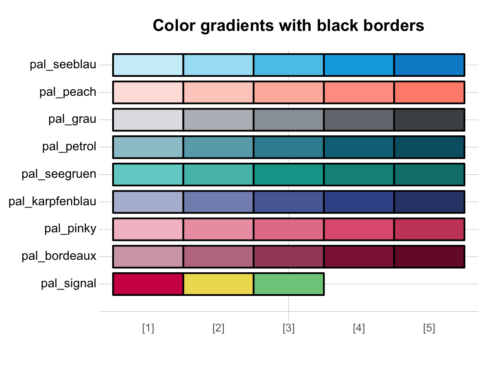
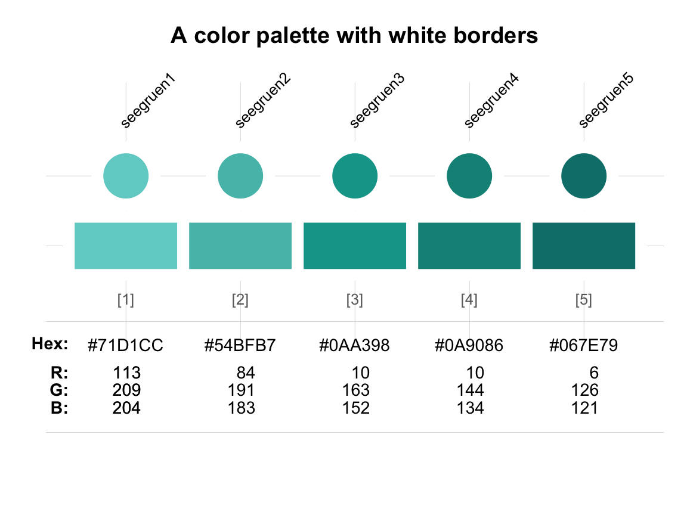
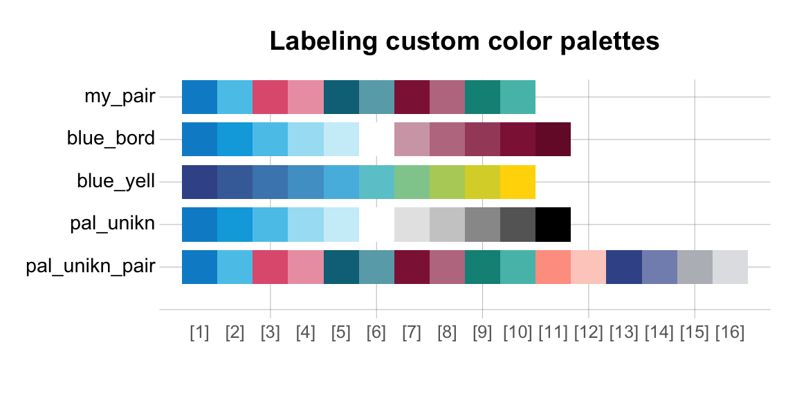
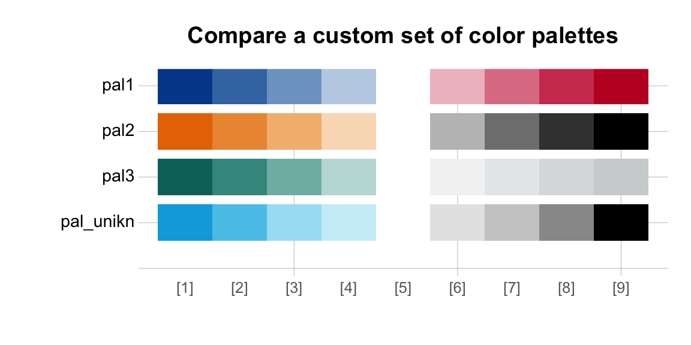

This vignette explains which colors and color palettes are provided by unikn and how they can be accessed and used. (See the vignette on text for information on text boxes and decorations.)
Please install and/or load the unikn package to get started:
# install.packages('unikn') # install unikn from CRAN client library('unikn') # load the package
Overview
There are 2 main functions to interact with the color palettes in the unikn package: seecol() and usecol().
-
The
seecol()function is a general-purpose tool for viewing (or seeing) color palettes.seecoltakes 2 main arguments:-
paldescribes either 1 or multiple color palettes (with a default ofpal = "all");
-
ndescribes the number of desired colors (with a default ofn = "all").
-
Based on the setting of pal, the seecol function distinguishes between 2 modes:
-
comparing a set of color palettes by passing a keyword or
list-object;
- viewing the details of a single color palette.
- The
usecol()function allows using a color palette without showing its details.
Viewing colors and color palettes with seecol
The behavior of the seecol() function depends on the inputs to its pal argument. It either allows comparing multiple color palettes or shows the details of a single color palette.
Viewing and comparing available color palettes
When the pal argument specifies (a list of) multiple color palettes, seecol() plots a vector for each palette to allow comparing these palettes. Some special keywords within the unikn package denote sets of color palettes: "unikn_all", "unikn_basic", pair_all", "pref_all" and "grad_all". Calling seecol with pal set to these keywords allows comparing pre-defined sets of the color palettes:
Viewing all available color palettes:
seecol("unikn_all") # same as seecol("all")

- three basic color palettes:
seecol("unikn_basic")

Note, that pal_unikn_web and pal_unikn_ppt are almost identical, but differ in how vibrant their colors are.
- three paired color palettes:
seecol("pair_all")

- all preferred colors from the spectrum and their respective gradients:
seecol("pref_all")

- only the pre-defined color gradients:
seecol("grad_all")

Viewing and saving a palette
When the pal argument of the seecol() function specifies a single color palette, the function plots a more detailed view of this particular color palette:
seecol(pal_unikn) # view details of pal_unikn

In the detailed overview, we see
- the color names (where available),
- numeric indices of the color palette,
- the HEX values of each color,
- the RGB values for each color.
A typical workflow may include seeing a color palette, saving it, and using it in a plot.
my_pal <- seecol(pal_unikn_light) # view details of AND save pal_unikn_light to my_pal

After saving the color palette you can use the palette object in your plot:

Note that seecol() invisibly returns the color palette.
Thus, the following will only plot the palette without doing anything else with the color vector:
seecol(pal_bordeaux)

Other parameters of seecol
The seecol() function provides a few aesthetic parameters for adjusting how color palettes are plotted:
-
col_brdallows specifying the color of box borders (if shown. Default:col_brd = NULL). -
lwd_brdallows specifying the line width of box borders (if shown. Default:lwd_brd = NULL). -
titleallows replacing the default title with a custom title.
Examples:
seecol("grad_all", col_brd = "black", lwd_brd = 2, title = "Color gradients with black borders")

seecol(pal_seegruen, col_brd = "white", lwd_brd = 10, title = "A color palette with white borders")

Using a palette with usecol (without seeing it)
The usecol() function allows directly using a color palette in a plot (i.e., without first viewing it). usecol() corresponds to seecol() by taking the same 2 main arguments (pal and n). However, as its purpose is using the colors specified by pal, rather than plotting (or seeing) them, the pal argument typically contains only 1 color palette:

Note that the both the seecol and the usecol function are quite permissive with respect to specifying their pal argument: A particular color palette (e.g., pal_seegruen) can not only be displayed by providing it (as an object) but also by providing its name (i.e., "pal_seegruen") or even its incomplete object name or name (i.e., "seegruen" or seegruen). Hence, the following all yield the same result:
Customizing color palettes
Both the seecol() and the usecol() functions allow a flexible on-the-fly customization of color palettes.
Specifying a value for the n argument of seecol an usecol allows:
- specifying subsets of colors and comparing these subsets for different palettes for
nsmaller than the length of the color palette. - extending color palettes and comparing different palettes for
ngreater than the length of the color palette.
Passing a vector of colors and/or color palettes allows you creating and viewing your own palettes.
Finally, specifying a value for alpha (in a range from 0 to 1) allows controlling the transparency of the color palette(s), with higher values for alpha corresponding to higher transparency (i.e., lower opacity).
Selecting subsets
Using only a subset of colors:
seecol("unikn_all", n = 4)

seecol(pal_unikn, 4)

Importantly, when using pre-defined color palettes of unikn but a value of n that is smaller than the length of the current color palette, usecol and seecol select a predefined subset of colors:
barplot(1/sqrt(1:2), col = usecol(pal_seeblau, n = 2)) barplot(1/sqrt(1:3), col = usecol(pal_seeblau, n = 3))


Extending color palettes
For values of n that are larger than the number of available colors in pal, the specified color palette is extended using ColorRampPalette:
seecol("all", n = 12)

seecol(pal_seeblau, 12)

When using a color palette:

Mixing color palettes
By passing a vector to pal, we can concatenate 2 color palettes and connect them with a color (here: "white") as the midpoint of a new color palette:

We can combine a set of colors and extend this palette by specifying an n argument that is larger than the length of the specified palette:

# Note, that redundant use of seecol and usecol shows HEX values as names. # seecol(pal = c(Karpfenblau, Seeblau, "gold"), n = 10) # would work, but show no intermediate names
These custom palettes can easily be used in a plot. For instance, we can define and use a subset of the pal_unikn_pair palette as follows:
my_pair <- seecol(pal_unikn_pair, n = 10)

# Create data: dat <- matrix(sample(5:10, size = 10, replace = TRUE), ncol = 5) # Plot in my_pair colors: barplot(dat, beside = TRUE, col = my_pair)

Controlling transparency
Both seecol() and usecol() accept an alpha argument (in a range from 0 to 1) for controlling the transparency of color palettes, with higher values for alpha corresponding to higher transparency (i.e., lower opacity).
Displaying a specific color palette at an opacity of 0.5:
seecol(pal_unikn, alpha = 0.5)

Setting opacity for comparing of multiple color palettes:
seecol("grad", alpha = 0.67)

Creating and comparing custom palettes
Suppose we want to compare a newly created color palette to existing color palettes. To achieve this, advanced users can use the seecol() function for displaying and comparing different custom palettes. When provided with a list of color palettes as the input to its pal argument, seecol() will show a comparison of the inputs:
# Define 2 palettes: pal1 <- c(rev(pal_seeblau), "white", pal_bordeaux) pal2 <- usecol(c(Karpfenblau, Seeblau, "gold"), n = 10) # Show the my_pair palette from above, the 2 palettes just defined, and 2 pre-defined palettes: seecol(list(my_pair, pal1, pal2, pal_unikn, pal_unikn_pair))

Note that unknown color palettes are named pal_\(n\), in increasing order. Palettes known to seecol() are labeled by their respective names.
Labeling the custom palettes can be achieved by setting the pal_names argument to a character vector of appropriate length:
seecol(list(my_pair, pal1, pal2, pal_unikn, pal_unikn_pair), pal_names = c("my_pair", "blue_bord", "blue_yell"), title = "Labeling custom color palettes")

If the pal_names argument is specified and corresponds to the length of palettes overall, the default names of all color palettes are overwritten by pal_names:
seecol(list(my_pair, pal1, pal2, pal_unikn, pal_unikn_pair), pal_names = c("my_pair", "blue_bord", "blue_yell", "blue_black", "mix_pair"), title = "Comparing and labeling custom color palettes")

As before, we can use the n argument for obtaining shorter subsets of color palettes:

or larger values of n for extending color palettes:

Examples
The following examples illustrate how plotting functions in R can use the unikn color palettes and the seecol() and usecol() functions.
- Using the
plotfunction of base R for a scatterplot:
plot(x = runif(99), y = runif(99), "p", pch = 16, cex = 4, col = usecol(pal_unikn, alpha = .50), # with transparency main = "99 transparent dots", axes = FALSE, xlab = NA, ylab = NA)

- Using the
ggplotfunction of ggplot2 for an area plot:
# Example based on https://www.r-graph-gallery.com/137-spring-shapes-data-art/ # (1) Create data: ---- ngroup <- 50 names <- paste("G_", seq(1, ngroup), sep = "") df <- data.frame() set.seed(3) for(i in seq(1:30)){ data = data.frame(matrix(0, ngroup, 3)) data[, 1] = i data[, 2] = sample(names, nrow(data)) data[, 3] = prop.table(sample( c(rep(0, 100), c(1:ngroup)), nrow(data))) df = rbind(df, data)} colnames(df) <- c("X","group","Y") df <- df[order(df$X, df$group) , ] # (1) Choose colors: ---- # (a) using RColorBrewer: # library(RColorBrewer) # cur_col <- brewer.pal(11, "Paired") # cur_col <- colorRampPalette(cur_col)(ngroup) # cur_col <- cur_col[sample(c(1:length(cur_col)), size = length(cur_col))] # randomize # (b) using unikn: library(unikn) cur_col <- usecol(pal = pal_unikn, n = ngroup) # cur_col <- cur_col[sample(c(1:length(cur_col)), size = length(cur_col))] # randomize # (3) Use ggplot2: ---- library(ggplot2) ggplot(df, aes(x = X, y = Y, fill = group)) + geom_area(alpha = 1, color = Grau, size = .01 ) + scale_fill_manual(values = cur_col) + theme_void() + theme(legend.position = "none")

Other institutions
The color palettes included in the unikn package are based on the CD manual of the University of Konstanz, Germany. However, the functionality provided by the package makes it easy and straightforward to define and use your own color scales. In the following, we provide examples to illustrate how this can be achieved for other institutions.
Defining colors and color palettes
A. University of Freiburg, Germany:

The Albert-Ludwigs Universität Freiburg provides fairly extensive information on its corporate color scheme (available here and here). Colors can be defined in a variety of ways, but R comes with convenient tools (like col2rgb and convertColor in grDevices) to handle most cases. The most straightforward way of creating a new color palette in R is by using its HEX/HTML code (provided in character format). As the University of Freiburg kindly provides their colors in this format, we can easily define the corresponding color palettes as named vectors:
# Basic colors: https://www.zuv.uni-freiburg.de/service/cd/cd-manual/farbwelt pal_freiburg_bluered <- c("#004a99", "#c1002a") names(pal_freiburg_bluered) <- c("uni-blau", "uni-rot") pal_freiburg_basic <- c("#004a99", "white", "#c1002a") # add "white" for better gradients names(pal_freiburg_basic) <- c("uni-blau", "weiss", "uni-rot") # Web colors: https://www.zuv.uni-freiburg.de/service/wsg/webstyleguide/farben pal_freiburg_blue <- c("#004a99", "#2a6ebb", "#6f9ad3") names(pal_freiburg_blue) <- c("blue-1", "blue-2", "blue-3") pal_freiburg_grey <- c("#f2f3f1", "#e0e1dd", "#d5d6d2", "#c9cac8", "#b2b4b3", "#9a9b9c", "#747678", "#363534") names(pal_freiburg_grey) <- c("grey-0", "grey-1", "grey-2", "grey-3", "grey-5", "grey-7", "grey-9", "grey-font") pal_freiburg_info <- c("#2a6ebb", "#a7c1e3", "#7b2927", "#de3831", "#739600", "#92d400", "#4d4f53", "#747678", "#b2b4b3", "#d5d6d2", "#e98300", "#efbd47") names(pal_freiburg_info) <- c("mid-blau", "hell-blau", "dark-red", "hell-red", "mid-green", "hell-green", "anthrazit", "dark-grey", "mid-grey", "hell-grey", "orange", "gelb")
Alternatively, we can define both (colors and names) in 1 step by using the newpal() function:
pal_freiburg_info <- newpal(col = c("#2a6ebb", "#a7c1e3", "#7b2927", "#de3831", "#739600", "#92d400", "#4d4f53", "#747678", "#b2b4b3", "#d5d6d2", "#e98300", "#efbd47"), names = c("mid-blau", "hell-blau", "dark-red", "hell-red", "mid-green", "hell-green", "anthrazit", "dark-grey", "mid-grey", "hell-grey", "orange", "gelb") )
Once a new color palette has been defined (and is available in your current R environment), we can use the seecol() and usecol() functions to view, modify, and use the palette:
seecol(pal_freiburg_info) # view color palette

# seecol(pal_freiburg_basic, n = 7) # extend color palette # seecol(c(pal_freiburg_blue, "white", pal_freiburg_grey)) # mix color palette
B. Princeton University, USA:

The color scheme of Princeton University is easily recognized by its combination of orange with black and white elements. The official guidelines (available here) define "Princeton Orange" as Pantone (PMS) 158 C.
-
The PANTONE™ color finder at https://www.pantone.com/color-finder/158-C yields the following color values:
- RGB:
232 119 34
- HEX/HTML:
#E87722
- CMYK:
0 62 95 0
- RGB:
-
However, the guide also specifies and distinguishes between 2 additional versions of orange and provides the following HEX/HTML values for them:
- Orange on white: "#E77500"
- Orange on black: "#F58025"
- Orange on white: "#E77500"
These definitions suggest defining 3 separate versions of orange and corresponding color palettes:
# HEX values for 3 shades of orange: orange_basic <- "#E87722" # Pantone 158 C orange_white <- "#E77500" # orange on white orange_black <- "#F58025" # orange on black # Defining color palettes: pal_princeton <- c(orange_basic, "black") names(pal_princeton) <- c("orange", "black") # Define color palette and names (in 2 steps): pal_princeton_1 <- c(orange_white, "white", "black") names(pal_princeton_1) <- c("orange_w", "white", "black") # Define both colors and names (in 1 step) by using the `newpal()` function: pal_princeton_1 <- newpal(col = c("#E77500", "white", "black"), names = c("orange_w", "white", "black")) # Define 2nd color palette: pal_princeton_2 <- newpal(col = c(orange_black, "black", "white"), names = c("orange_b", "black", "white")) # View color palette (with custom background color and title): seecol(pal_princeton_1, # view color palette col_bg = "grey90", title = "Color palette of Princeton University")

C. Max Planck Society, Germany:

The CD manual (available here) of the Max Planck Society specifies the use of 2 primary colors:
-
Green as Pantone 328: Using the PANTONE™ color finder at https://www.pantone.com/color-finder/328-C yields the following color values:
- RGB:
0 115 103
- HEX/HTML:
#007367
- CMYK:
100 10 61 38
- RGB:
-
Grey as Pantone 427: Using the PANTONE™ color finder at https://www.pantone.com/color-finder/427-C yields the following color values:
- RGB:
208 211 212
- HEX/HTML:
#D0D3D4
- CMYK:
7 3 5 8
- RGB:
Again, the easiest way of defining a corresponding color palette is by creating a named vector. To allow for better color gradients, we insert the color "white" between the 2 dedicated colors:
As before, can now use the seecol() and usecol() functions to view, modify, and use the new pal_mpg color palette:
seecol(pal_mpg, col_brd = "black", lwd_brd = 2, title = "Colors of the Max Planck Society")

Comparing custom color palettes
Once a new palette has been defined (and is available in your current R environment), the seecol() and usecol() functions allow comparing, scaling, and using them in the same fashion as the native unikn color palettes:
# Compare and extend custom color palettes: # seecol(list(pal_freiburg_info, pal_freiburg_basic, pal_mpg, pal_princeton_1)) # Scaled version: seecol(list(pal_freiburg_basic, pal_princeton_1, pal_mpg, pal_unikn), n = 9, pal_names = c("Uni Freiburg", "Princeton Uni", "Max Planck", "Uni Konstanz"), title = "Comparing scaled color palettes")

Resources
The following versions of unikn and corresponding resources are currently available:
| Type: | Version: | URL: |
|---|---|---|
| A. unikn (R package): | Release version | https://CRAN.R-project.org/package=unikn |
| Development version | https://github.com/hneth/unikn | |
| B. Online documentation: | Release version | https://hneth.github.io/unikn |
| Development version | https://hneth.github.io/unikn/dev |